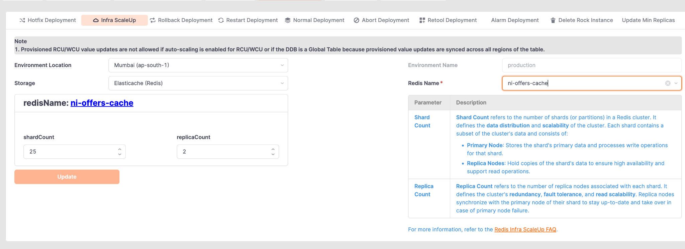

AWS ElastiCache · Redis Cluster
What shardCount and replicaCount actually mean, how many nodes they produce, where your data lives, and what happens when a node dies.

ni-offers-cache.Only two numbers on that screen matter, and everything else in this page follows from them. The panel on the right of the screenshot says the same thing in AWS's words: a shard holds a subset of the cluster's data and consists of one Primary Node (handles writes) plus Replica Nodes (copies, for availability and read scaling).
replicaCount = 2 means each shard keeps 2 extra copies alongside its primary:
Shard 1 │ ├── Primary ← the real one. All writes go here. ├── Replica 1 ← continuously copies the primary └── Replica 2 ← continuously copies the primary
The replicas are not idle spares sitting in a cupboard — they stream every change from the primary as it happens, so they stay a fraction of a second behind at all times.
The number that trips everyone up. replicaCount means replicas in addition to the primary — the primary is not counted as one of them.
That +1 is the primary. Applied to our cluster:
Each shard = 1 Primary
+ 2 Replicas
= 3 nodes
Total = 25 shards × 3 nodes
= 75 nodes
So it is not 25 × 2 = 50. It is 25 × 3 = 75.
| Shards | Replicas per shard | Nodes per shard | Total nodes | Survives a node loss? |
|---|---|---|---|---|
| 25 | 0 | 1 | 25 | No — that shard's data is gone |
| 25 | 1 | 2 | 50 | Yes — one spare |
| 25 | 2 | 3 | 75 | Yes — two spares (our setup) |
| 25 | 3 | 4 | 100 | Yes — three spares |
25 shards × 3 nodes each. Here are the first four, and the last — the pattern repeats identically:
P = Primary · R = Replica
There is no lookup table and no coordinator asking "where is this key?". Redis Cluster divides the keyspace into a fixed 16,384 hash slots, and every shard owns a range of them.
slot = CRC16(key) mod 16384 customer:101 → CRC16 → slot 866 → owned by Shard 2 customer:102 → CRC16 → slot 15298 → owned by Shard 24
With 25 shards, each owns roughly 16384 / 25 ≈ 655 slots:
Shard 1 → slots 0 – 655 Shard 2 → slots 656 – 1310 Shard 3 → slots 1311 – 1965 ... Shard 25 → slots 15729 – 16383
The client library caches this slot→node map, so it connects directly to the right node. No extra hop, no proxy.
CLUSTER_SLOTS) and is part of the Redis Cluster spec. It is not an AWS setting and not tunable. Every Redis Cluster in the world uses 16,384 slots.
Because the shard count changes. Compare what happens when we grow from 25 shards to 26:
Option A — hash directly to a shard number slot = CRC16(key) mod 25 → CRC16(key) mod 26 The answer changes for ~96% of keys. Almost the entire dataset has to move. Option B — fixed 16384 slots (what Redis does) 25 shards → 16384 / 25 = 655 slots each 26 shards → 16384 / 26 = 630 slots each The new shard needs ~630 slots. Each existing shard hands over ~25 of its slots. Only 630 / 16384 ≈ 3.8% of keys move. The rest never budge.
The 655 and 630 above are just 16384 ÷ shardCount — arithmetic for this cluster, not fixed Redis values. Only 16,384 itself is a constant.
1. CRC16 turns the key name into a number.
CRC16("customer:101") = 49554
Same key always gives the same number, on every machine.
2. mod 16384 squeezes it into 0 – 16383. That is the SLOT.
49554 mod 16384 = slot 866
3. That slot already belongs to a shard — assigned when the
cluster was built, long before your key existed.
slot 866 falls in range 656 – 1310 → Shard 2
4. The client already has the slot→node map cached, so it
connects straight to that node. No proxy, no lookup call.
→ ni-offers-cache-0002-001
Once the slot is worked out, that decides the shard — and the data is stored there. At read time the exact same calculation runs again, gives the exact same slot, and the client goes straight to that shard.
WRITE
SET customer:101 "offer123"
CRC16 → mod 16384 → slot 866 → Shard 2
→ value stored on Shard 2
READ (later, from any app server)
GET customer:101
CRC16 → mod 16384 → slot 866 → Shard 2
→ goes directly to Shard 2, finds it there
Same key → same slot → same shard, every single time. That is why no lookup is ever needed: the write and the read both compute their way to the same node on their own.
This is the payoff for having replicas. Say the primary of Shard 1 fails:
Before
Shard 1 → Primary 0001-001 ✅ | Replica 0001-002 | Replica 0001-003
Primary crashes
Shard 1 → Primary 0001-001 ❌ | Replica 0001-002 | Replica 0001-003
Automatic failover (seconds)
Shard 1 → Primary 0001-002 ✅ | Replica 0001-003
(0001-001 rebuilt, rejoins as a replica)
replicaCount = 2 you can lose two nodes in the same shard and still be serving. That is what the second replica is really buying — cover during the window while the first failure is being repaired.replicaCount = 0 in production is a bad idea — one node loss means permanent data loss for 1/25th of your keyspace.| Primary | Replica | |
|---|---|---|
Writes (SET, DEL, INCR) | Yes — always | Never |
Reads (GET) | Yes | Only if the client opts in |
| Data freshness | Always current | Milliseconds behind |
| Count per shard here | 1 | 2 |
By default every request — read and write — goes to the primary, and replicas sit there purely as insurance. Clients can opt into replica reads (Redis calls this READONLY mode; most libraries expose it as a "read from replica" setting).
ElastiCache node names encode exactly where the node sits:
ni-offers-cache-0001-001
└──────┬──────┘ └─┬┘ └┬┘
cache name shard node
01 01
| Node name | Means |
|---|---|
ni-offers-cache-0001-001 | Shard 1, node 1 |
ni-offers-cache-0001-002 | Shard 1, node 2 — same data as above |
ni-offers-cache-0005-002 | Shard 5, node 2 — completely different data |
ni-offers-cache-0025-003 | Shard 25, node 3 |
-001 node is not permanently the primary. It usually starts out as one, but after any failover the roles move. Always check the console's Role column rather than assuming from the number.This is the practical reason to understand shards at all. When CPU is high on a Redis cluster, the first question is one node or many?
| Pattern | What it means | What to do |
|---|---|---|
| All 25 shards busy, evenly | Genuine load. The cluster is doing real work at its current size. | Scale up — add shards. |
| One shard hot, 24 quiet | Hot shard. One shard is getting a wildly disproportionate share of traffic. | Find the hot key. Adding shards will not help — the key still lands on one shard. |
| One node hot within a shard | That node is the primary taking all traffic while replicas idle. | Normal, unless you expected replica reads to be on. |
→ Related: check Engine CPU Utilization per node to spot this. Select all nodes in the CloudWatch panel instead of one — an outlier line is your hot shard.
They solve different problems. Picking the wrong one wastes money and fixes nothing.
| Your problem | Increase | Why |
|---|---|---|
| Running out of memory | shardCount | More shards = more total RAM. Replicas add zero capacity. |
| Engine CPU high across all nodes | shardCount | More shards = more parallel command loops. |
| Want to survive more node failures | replicaCount | More spares per shard. |
| Read traffic heavy, writes light | replicaCount + replica reads | Spreads reads across more nodes in the same shard. |
| One shard hot, rest idle | Neither | Fix the key design. More infrastructure will not move a hot key off its shard. |
shardCount triggers a resharding — hash slots and their keys migrate between nodes while the cluster is live. It works online, but it consumes CPU and network for the duration. Do it in a low-traffic window, not during an incident.In a clustered Redis, a command touching several keys only works if all those keys live on the same shard. Otherwise:
MGET customer:101 customer:102 → (error) CROSSSLOT Keys in request don't hash to the same slot
The two keys hash to different shards, and no single node can answer. Same applies to MSET, SUNION, transactions spanning keys, and Lua scripts touching multiple keys.
Wrap part of the key in { } and Redis hashes only that part:
{customer:101}:profile ┐
{customer:101}:orders ├─ all hash on "customer:101"
{customer:101}:cart ┘ → same slot → same shard
MGET {customer:101}:profile {customer:101}:orders ✅ works
{india}, every key in the country lands on one shard and your other 24 sit idle. Tag by something with high cardinality — a customer id, an order id — never a region or a constant.A single 500 MB key cannot be split. It sits entirely on one shard, skewing memory and CPU for that shard alone. Split large structures across multiple keys instead.
Under heavy writes, replicas fall further behind. If you read from replicas, that lag becomes visible staleness. Monitor ReplicationLag if replica reads are enabled.
| Redis | Library | Purpose |
|---|---|---|
| Shard | A different section of the library — History, Science, Fiction | Scale — no single room holds every book |
| Replica | A photocopy of a whole section kept in another building | Safety — a fire in one building loses nothing |
| Hash slot | The catalogue rule that says which section a book belongs to | Routing — everyone computes the same answer |
SHARD
↓
"Split the data" → more space, more speed
REPLICA
↓
"Copy the data" → survives failure, spreads reads
┌── Primary (writes + reads)
Shard ────────┼── Replica 1 (copy)
└── Replica 2 (copy)
Nodes per shard = 1 + replicaCount
Total nodes = shardCount × (1 + replicaCount)